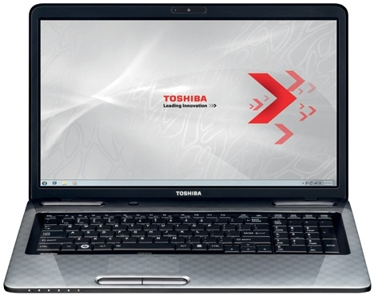

Ноутбуки TOSHIBA
 Ноутбук TOSHIBA Satellite L775-12F
Цвет: gold, red, white, black
Доставка: 60 дн.
Характеристики товара
- Бренд: Toshiba
- Тип: Ноутбук
- Частота процессора: 2.3 ГГц
- Объем видеопамяти: 2 ГБ
- Объем оперативной памяти: 4 Гб
- Количество ядер: 2
- Объём HDD: 750 Гб
- Поверхность дисплея: глянцевая
- Тип видеокарты: дискретная
- Официальная гарантия: 12 мес.
Ноутбук Toshiba Satellite L830-CKW
Цвет: white
Доставка: 60 дн.
Характеристики товара
- Бренд: Toshiba
- Тип: Ноутбук
- Частота процессора:1.8 ГГц
- Объём HDD: 500 Гб
- Объем оперативной памяти: 4 Гб
- Количество ядер: 2
- Операционная система: Windows 7 Home
- Поверхность дисплея: глянцевая
- Тип видеокарты: дискретная
- Официальная гарантия: 12 мес.
- Тип аккумулятора: Li-Ion